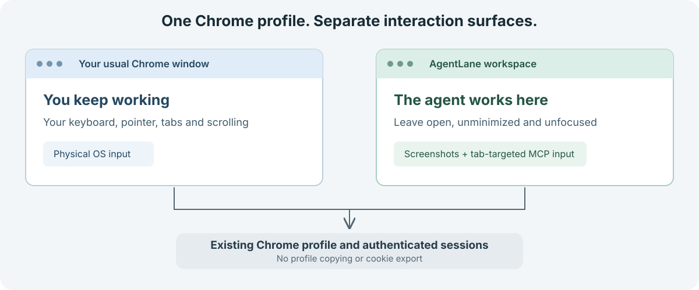
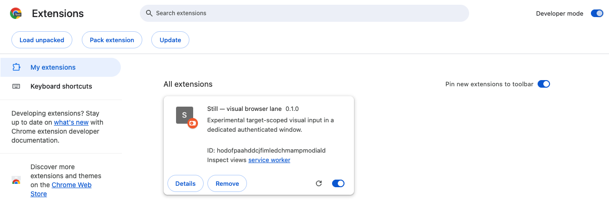
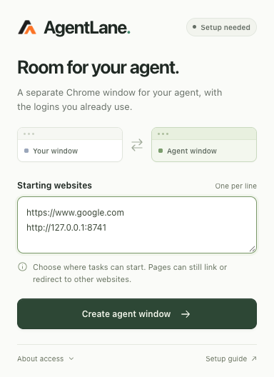
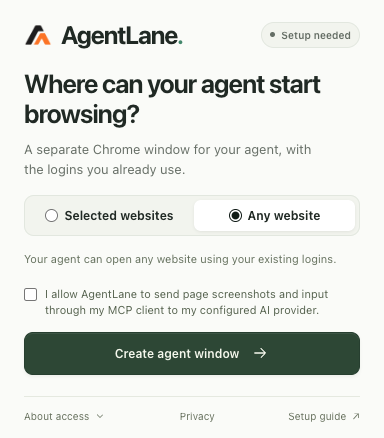

Documentation
Everything needed to install AgentLane, connect an agent and recover when something goes wrong. Status labels used below: Supported tested in this repository, Experimental works but is not certified, Unsupported / Untested.
Overview
AgentLane is a Chrome extension plus a local MCP (Model Context Protocol) server. It gives an agent its own lane: a separate Chrome window inside your existing profile, where the agent gets real screenshots and sends clicks, typing and scrolling to a tab it owns. Your keyboard and pointer keep driving your own window.
It solves a specific conflict: an agent that controls the desktop browser competes with you for focus and input. AgentLane separates the input surface from the authentication store: the agent shares your logins (the Chrome profile) but not your keyboard, pointer or tabs.

Status: Experimental. A tested path exists on normal Chrome 157 (see the evidence log), but native dialogs, popups, individual Space transitions and arbitrary sites are not universally isolated.
Requirements & support
| Surface | Status | Notes |
|---|---|---|
| macOS + Google Chrome | Supported | Tested on Chrome 157 (normal profile) and Chrome for Testing 159 (disposable). |
| Node.js | Supported | 22 or newer. |
| Codex (MCP, stdio) | Supported | Full protocol path tested. Does not replace Codex's native computer use. |
| Claude Code (MCP, stdio) | Supported | Verified on 2.1.326: registration, tool discovery and an open → screenshot → close run. |
| Other stdio MCP clients | Untested | Expected to work: standard tool and image content. Coordinate reading depends on the model. |
| Standard HTML selects | Supported | Rendered in-page; requires Chrome 134+ (appearance: base-select). |
| Linux Chromium | Untested | Needs a custom manifest directory and a short owner-only AGENTLANE_STATE_DIR. |
| Windows | Unsupported | Unix socket and installer need a Windows transport. |
| Other Chromium browsers, Firefox, Safari | Unsupported | Unverified or would need a different input backend. |
| Native menus, file pickers, permission sheets, passkeys, popups | Not isolated | Stop the workflow at these boundaries. |
What an MCP client needs
- stdio MCP servers: it must be able to launch
node /absolute/path/to/AgentLane/src/mcp.js. - Image tool results: it must pass
lane_screenshot's image to the model without dropping it. - A vision model that can read click coordinates from a 1100 × 760 screenshot.
- The same Mac that runs Chrome and the extension: the bridge is a local Unix socket, so remote or cloud-hosted agents cannot reach it.
Full matrix: docs/COMPATIBILITY.md.
Install
Required setup. Allow roughly ten minutes. Keep the checkout in place afterward: the native launcher and the MCP configuration refer to its files.
1. Get the code and verify it
git clone https://github.com/orkunkinay/AgentLane.git
cd AgentLane
npm ci
npm testnpm test runs syntax checks and the test suite (policy, framing, native transport, MCP over stdio, recovery). It does not open your Chrome profile.
2. Load the extension
- In the Chrome profile where you are already logged in, open
chrome://extensions. - Turn on Developer mode (upper right).
- Click Load unpacked and select the
extension/folder inside the checkout, not the repository root. - Copy the 32-character ID on the AgentLane card.

Chrome grants the extension broad debugger access, although AgentLane exposes only a narrow toolset. Review the extension before using it on a real profile. Screenshots may contain private information and reach your configured AI provider.
3. Register the native messaging host
node scripts/install-host.mjs YOUR_32_CHARACTER_EXTENSION_IDThe ID must be 32 letters from a to p. The script writes org.agentlane.browser.json into Chrome's NativeMessagingHosts directory (default: ~/Library/Application Support/Google/Chrome/NativeMessagingHosts, overridable as the second argument) and a launcher at ~/.agentlane/native-host that pins your absolute Node path. It refuses to overwrite existing files; inspect and remove them yourself first. Chrome's manifest allows only your exact extension origin.
4. Create the agent window
Click AgentLane in Chrome's toolbar (or the puzzle-piece menu), choose where the agent may start browsing (see Starting websites) and click Create agent window. A separate window titled AgentLane workspace appears. Keep it restored and unfocused; switch back to your own window. Connected only appears once the local connection is confirmed; otherwise the popup shows Not connected with a retry.


5. Connect your agent
See Connect an agent, then start a fresh conversation so the tools are discovered.
6. First task
Use the agentlane-browser skill. Open https://www.google.com and search for
“Chrome DevTools Protocol”. Use AgentLane lane tools and screenshots only.
Show me the result, then close your owned tab.Keep typing and clicking in your own window while the agent works. If anything steals focus or switches a Space, treat it as a failed isolation test and stop.
Starting websites Supported
Optional configuration, set in the AgentLane popup under Where can your agent start browsing?
| Mode | Behavior |
|---|---|
| Selected websites (default) | lane_open and lane_navigate must match a listed website by protocol, hostname and port. Enter one HTTP(S) address per line; a bare domain gets https://. Fresh installs prefill https://www.google.com. localhost and 127.0.0.1 differ. |
| Any website | Direct opening and navigation accept any HTTP(S) address without embedded credentials. Tab ownership and focus protections still apply. |
https://www.google.com
http://127.0.0.1:8741Settings persist across popup reopening and browser restarts and can only be changed when no agent sessions are active. Empty or invalid older settings stay in Selected websites mode and never enable Any website. This setting restricts direct opening and navigation only. Links, redirects, iframes and other page requests are not filtered.

Connect an agent
AgentLane's MCP server is a stdio process: node /absolute/path/to/AgentLane/src/mcp.js. Use absolute paths so the configuration does not depend on your shell's working directory or PATH.
Codex Supported
AGENTLANE_NODE="$(node -p 'process.execPath')"
AGENTLANE_PROJECT="$(pwd)"
codex mcp add agentlane -- "$AGENTLANE_NODE" "$AGENTLANE_PROJECT/src/mcp.js"
codex mcp get agentlaneThe last command should report an enabled stdio server named agentlane whose arguments end in src/mcp.js. Install the bundled skill, which teaches the agent the operating rules (it refuses to overwrite an existing skill):
node scripts/install-skill.mjsThis copies skills/agentlane-browser to ~/.codex/skills/agentlane-browser (or under $CODEX_HOME); invoke it as $agentlane-browser. The skill does not create a browser connection by itself. For another skills-compatible agent, pass a destination directory as the last argument.
Claude Code Supported
AGENTLANE_NODE="$(node -p 'process.execPath')"
AGENTLANE_PROJECT="$(pwd)"
claude mcp add agentlane -- "$AGENTLANE_NODE" "$AGENTLANE_PROJECT/src/mcp.js"Check it with claude mcp get agentlane; it should report Connected. Verified with Claude Code 2.1.326: the eight lane_* tools (shown as mcp__agentlane__lane_*) are discovered, and lane_open → lane_screenshot → lane_close completed against a real lane. Install the bundled skill with node scripts/install-skill.mjs --target claude (copies it to ~/.claude/skills/agentlane-browser); Claude Code lists it and exposes it as /agentlane-browser. The lane tools also work without the skill: just ask for them by name.
Other MCP clients Untested
{
"mcpServers": {
"agentlane": {
"command": "/absolute/path/to/node",
"args": ["/absolute/path/to/AgentLane/src/mcp.js"]
}
}
}Or, for TOML-configured clients:
[mcp_servers.agentlane]
command = "/absolute/path/to/node"
args = ["/absolute/path/to/AgentLane/src/mcp.js"]If the agent cannot see lane_* tools, the current conversation does not have AgentLane enabled. Start a fresh conversation with the server enabled. Do not fall back to native desktop control for this workflow.
Using AgentLane
Keep the AgentLane workspace window open, unminimized and unfocused; work in your usual window. Ask the agent for the skill by name and describe the task. The agent loop is: lane_open → lane_screenshot → one input → lane_screenshot → … → lane_close.
| Situation | What to do |
|---|---|
| Starting a task | Ask for $agentlane-browser in a conversation with the tools available. |
| Finishing | The agent calls lane_close. The empty lane window stays available. |
| Lane focused or minimized | Switch to your own window or restore the lane yourself. The agent must not activate it. |
| Changing browsing policy | Close agent sessions, open AgentLane, change mode or list, click Save starting websites. No reload needed. |
| Lane window closed | Click Create agent window, leave it unfocused, then lane_open again in the same conversation. Old tabs and tokens are gone. |
| Browser bridge disconnected | Click Connect browser. The existing MCP process reconnects on its next call; use lane_open for a fresh tab. Interrupted actions are never replayed. |
| Stale frame reported | Take a fresh screenshot before the next input. |
| Native auth, permission sheet or popup | Stop at that unsupported boundary and hand off. |
Repeatable local demo
A synthetic demo server and a scripted two-minute run exist for verifying your setup without touching real accounts:
node scripts/demo-server.mjs
# in your own Chrome window, visit http://127.0.0.1:8741/seed
# add http://127.0.0.1:8741 under Selected websites, then in another terminal:
node scripts/concurrency-demo.mjs http://127.0.0.1:8741 120The script reports completed tool calls and saves a final screenshot; whether you were interfered with still needs your own observation. Stop the server with Ctrl+C. See the seven-test acceptance protocol.
Tool reference
Eight tools, defined in src/mcp.js. Coordinates are CSS pixels in a fixed 1100 × 760 viewport at scale 1 (x 0–1099, y 0–759). Tool names may carry a client-specific prefix.
| Tool | Arguments | Behavior |
|---|---|---|
lane_open | url | Creates the connection's one owned tab in the lane and navigates it. URL must pass the starting-website policy. |
lane_screenshot | none | Returns a real PNG of the tab's rendered pixels plus a single-use frame token and metadata. |
lane_click | frame, x, y | Left-click at a coordinate seen in the latest screenshot. |
lane_type | frame, text (≤ 10,000 chars) | Inserts text into the already-focused field. No clipboard access. |
lane_key | frame, key | Enter, Escape, Backspace, ArrowUp, ArrowDown, ArrowLeft or ArrowRight. Tab is intentionally absent. |
lane_scroll | frame, x, y, deltaX, deltaY | Mouse-wheel scroll at a point; each delta from −3000 to 3000. |
lane_navigate | url | Navigates the owned tab to an HTTP(S) URL permitted by setup. |
lane_close | none | Closes only the owned tab. Call when finished. |
Not exposed, by design: arbitrary JavaScript, raw CDP, DOM selectors, cookie/storage access, file upload, clipboard, browser shortcuts, and any way to list or select your own tabs.
Concepts
- Lane
- A dedicated normal Chrome window ("AgentLane workspace") in your existing profile. It must stay restored and unfocused while the agent works; a focused or minimized lane is refused.
- Owned tab
- Each connected MCP process gets one host-assigned session and one tab created inside the lane. Only that tab can be driven. If it moves to another window, ownership is lost and it is detached, never closed.
- Frame token
- Every screenshot returns a random single-use token. Each input consumes it, and observed navigation invalidates it. The sequence is screenshot → click → new screenshot → type. Tokens detect reuse and observed navigation; they do not freeze a dynamic page.
- Capability gate
- The extension worker queues commands, checks window state and tab membership, and applies the starting-website policy before any input reaches the page.
- Native host & socket
- Chrome starts
src/native-host.jsas a native messaging host. It listens on an owner-only Unix socket (~/.agentlane/browser.sock, directory 0700, socket 0600). The MCP process connects there. No TCP port is opened.
Deeper reference: docs/ARCHITECTURE.md.
Security considerations
- AgentLane is a local trusted browser controller, not a sandbox against other processes running as your user, a malicious extension, a compromised Chrome, or an agent that also has shell or desktop tools.
- No cookie, password or token extraction; no TCP listener; the host's extension-origin allowlist and owner-only socket restrict who can connect.
- The extension itself holds broad
debuggerauthority. Review it before use on a real profile. - Sharing authentication also shares authority: an agent can perform account actions through visible page UI. Confirm consequential actions under your agent's normal policy.
- Screenshots and typed text go through your MCP client and may reach its model provider. Page content is untrusted and can attempt prompt injection.
- Do not use AgentLane for hostile sites or security-critical workflows until remaining browser-UI escape paths are closed.
Full threat table: SECURITY.md. This repository has no hosted security-reporting service yet; when filing bugs provide versions, a synthetic reproduction and redacted logs, never real account screenshots or profiles.
Known limitations
- Not a general zero-interruption guarantee. Popups, native dialogs, permission sheets, passkeys, file pickers and security interstitials can still activate windows. Popups are neither controlled nor adopted.
- Individual Space transitions and a fully occluded lane are not certified; blank or stale screenshots count as failures.
- Profile storage, cookies, service workers and server-side account state are shared between lanes and your tabs.
- Some sites use tab-local or device-bound authentication that a new lane tab cannot inherit.
Taband browser shortcuts are unavailable; file uploads are not implemented; downloads are not suppressed.- A worker restart does not adopt old tabs. Orphaned windows may need manual cleanup.
- A hung command poisons the lane; recovery needs a new lane window or an extension reload.
- ChatGPT navigation was blocked in the tested profile (Chrome refuses access to another extension's URL; not bypassed).
- Applying a source update requires reloading the extension and restarting the MCP process once.
Planned work and gates: docs/ROADMAP.md. Measured results and failures: docs/EVIDENCE.md.
Troubleshooting
Condensed from the full guide. Never recover by copying cookies, switching to desktop input, or having the agent focus the lane.
“Not connected”, ENOENT, or “Browser bridge unavailable”
The lane window and the browser bridge are separate. Confirm the extension is loaded in the intended profile, that you registered its exact ID with scripts/install-host.mjs, and that ~/.agentlane/browser.sock exists. Then click Connect browser or Create agent window in the popup. Retry lane_open in the same conversation; the MCP client reconnects. Moving the checkout requires re-registering the host after removing the old manifest. Opening anchor.html alone does not connect anything.
Native host not found / forbidden
The manifest must be named org.agentlane.browser, have an absolute launcher path and list exactly your extension origin (no wildcards). The installer targets normal macOS Google Chrome; for another browser pass its manifest directory as the second argument.
EADDRINUSE on the socket
Another profile or host may own it. Do not delete a live socket: check ps -axo pid,command for native-host.js. If Chrome crashed and nothing owns it, remove only ~/.agentlane/browser.sock, reload the extension and create a fresh lane. A second profile needs a different short AGENTLANE_STATE_DIR set in both the launcher and the MCP environment.
Lane focused or minimized
Switch back to your own window or restore the lane manually, then retry. The agent must not fix this itself.
Blank or stale screenshot
Report it as a rendering failure and keep the lane restored. Use the disposable harness (npm run test:browser) to tell Chrome rendering apart from the target site. Never substitute DOM snapshots or bring Chrome forward.
Renderer timeout
A command deadline detaches the debugger and poisons the lane. Close the identified AgentLane window, create a new one (or reload the extension) and call lane_open again. The hung command is not replayed.
Stale frame
The rejected input was not dispatched. Take a fresh screenshot before each click, type, key or scroll. Do not blindly replay an input that may have completed.
Unapproved starting origin
Add the exact origin, including port, under Selected websites (after closing active sessions) or choose Any website, then Save starting websites. No reload is needed.
Agent still uses native computer use
The MCP server is a separate toolset. Start a conversation with AgentLane enabled and explicitly ask for the lane tools.
Selecting an option switches windows
Older builds opened Chrome's native select menu. Finish active tasks, reload the extension, create a new lane and start a fresh MCP conversation. If a native picker is still blocked, stop that dropdown workflow.
Not authenticated on a site
Confirm the extension runs in the profile with the login. Persistent cookies usually apply to new tabs; tab-local sessionStorage, expired or device-bound sessions and fresh consent may not. Do not copy cookies or fall back to a fresh browser.
Uninstall
- Disable or remove the extension at
chrome://extensions. - Remove the
agentlaneentry from your agent's MCP configuration. - Remove
~/Library/Application Support/Google/Chrome/NativeMessagingHosts/org.agentlane.browser.json. - Close only windows you recognise as AgentLane lanes. Once the native host has exited, remove
~/.agentlane/native-hostand any stale~/.agentlane/browser.sock.
Do not delete Chrome profile files. Upgrading from the former Still installation: see the migration guide.
Develop & verify
npm test # syntax checks + unit/IPC/MCP tests
npm run format:check # prettier
npx playwright install chromium
npm run test:browser # real chrome.debugger in a disposable profile
node experiments/setup.mjs # setup popup flows
node experiments/dropdown.mjs # select dropdown isolationBrowser experiments use a disposable Chrome for Testing profile, never your own. Headed macOS observation (foreground app, pointer, Spaces) is described in docs/VALIDATION.md. This website itself is static: python3 -m http.server in the repository root serves it, and npm run check:site validates its links.
Contributing: CONTRIBUTING.md. Never commit profiles, cookies, tokens or screenshots of real accounts.
More reading
- Architecture: ownership, transport, rendering and failures.
- Evidence: exact results, failed experiments, limitations.
- Research: alternatives considered and prior work.
- Validation: reproducible acceptance protocol.
- Roadmap and compatibility.
- Issues · MIT license